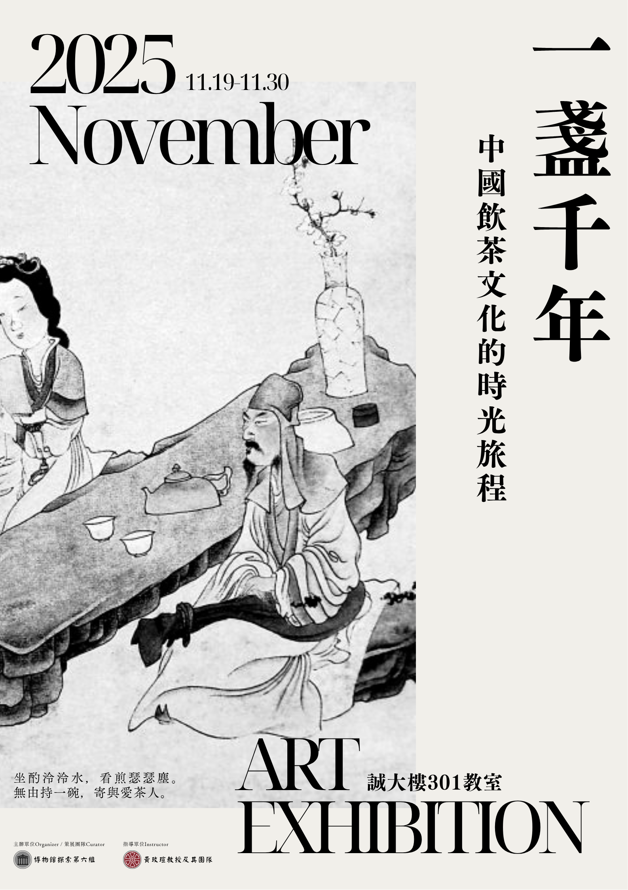

理念
讓觀眾了解手搖飲背後的文化根源，體會其在茶文化中承載的歷史意義
呈現茶器在不同朝代的功能、造型與地位象徵
設計概念
傳遞的意念：強調「形式雖變、精神不變」，茶器隨時代在形制、材質與裝飾上演進，始終體現生活與美學需求
教育衍生性： 讓觀眾認識古代茶器的種類、材質、造型與用途，並了解不同茶器背後的社會文化背景
附加價值： 設立「線上互動區」，讓觀眾投票選出最喜愛的茶器與詩畫，提升參與與互動感
